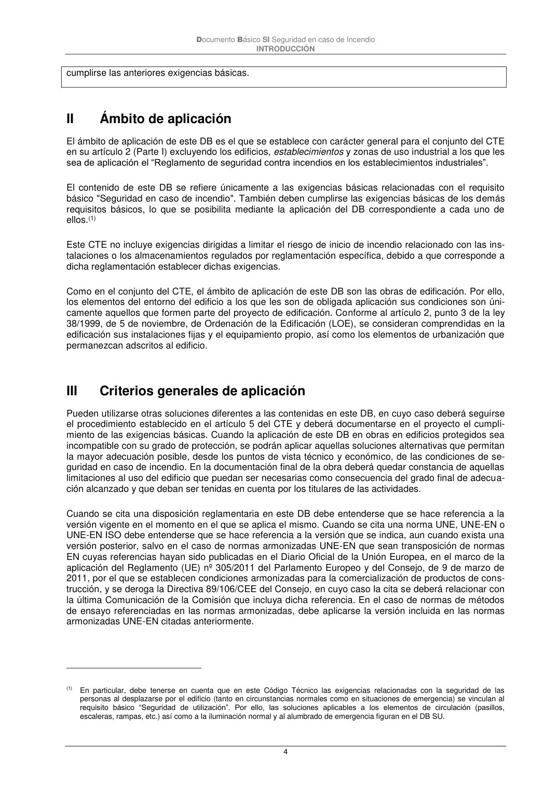

DB-SI · II Ámbito de aplicación · III Criterios generales de aplicación · versión 2025-03-04
SHA256: 0a2e78cd62471d9cc5cfe2efbc6aa39fdbad73c124aea7b039f9de96c141e105 · página física 4 de 92 · métodos de encabezado
solo si están cotejados.
Formatos: Markdown · JSON de bloques · PDF p. 4 · imagen PNG
Documento Básico SI Seguridad en caso de Incendio
INTRODUCCIÓN
4
cumplirse las anteriores exigencias básicas.
II
Ámbito de aplicación
El ámbito de aplicación de este DB es el que se establece con carácter general para el conjunto del CTE
en su artículo 2 (Parte I) excluyendo los edificios, establecimientos y zonas de uso industrial a los que les
sea de aplicación el “Reglamento de seguridad contra incendios en los establecimientos industriales”.
El contenido de este DB se refiere únicamente a las exigencias básicas relacionadas con el requisito
básico "Seguridad en caso de incendio". También deben cumplirse las exigencias básicas de los demás
requisitos básicos, lo que se posibilita mediante la aplicación del DB correspondiente a cada uno de
ellos.(1)
Este CTE no incluye exigencias dirigidas a limitar el riesgo de inicio de incendio relacionado con las ins-
talaciones o los almacenamientos regulados por reglamentación específica, debido a que corresponde a
dicha reglamentación establecer dichas exigencias.
Como en el conjunto del CTE, el ámbito de aplicación de este DB son las obras de edificación. Por ello,
los elementos del entorno del edificio a los que les son de obligada aplicación sus condiciones son úni-
camente aquellos que formen parte del proyecto de edificación. Conforme al artículo 2, punto 3 de la ley
38/1999, de 5 de noviembre, de Ordenación de la Edificación (LOE), se consideran comprendidas en la
edificación sus instalaciones fijas y el equipamiento propio, así como los elementos de urbanización que
permanezcan adscritos al edificio.
III
Criterios generales de aplicación
Pueden utilizarse otras soluciones diferentes a las contenidas en este DB, en cuyo caso deberá seguirse
el procedimiento establecido en el artículo 5 del CTE y deberá documentarse en el proyecto el cumpli-
miento de las exigencias básicas. Cuando la aplicación de este DB en obras en edificios protegidos sea
incompatible con su grado de protección, se podrán aplicar aquellas soluciones alternativas que permitan
la mayor adecuación posible, desde los puntos de vista técnico y económico, de las condiciones de se-
guridad en caso de incendio. En la documentación final de la obra deberá quedar constancia de aquellas
limitaciones al uso del edificio que puedan ser necesarias como consecuencia del grado final de adecua-
ción alcanzado y que deban ser tenidas en cuenta por los titulares de las actividades.
Cuando se cita una disposición reglamentaria en este DB debe entenderse que se hace referencia a la
versión vigente en el momento en el que se aplica el mismo. Cuando se cita una norma UNE, UNE-EN o
UNE-EN ISO debe entenderse que se hace referencia a la versión que se indica, aun cuando exista una
versión posterior, salvo en el caso de normas armonizadas UNE-EN que sean transposición de normas
EN cuyas referencias hayan sido publicadas en el Diario Oficial de la Unión Europea, en el marco de la
aplicación del Reglamento (UE) nº 305/2011 del Parlamento Europeo y del Consejo, de 9 de marzo de
2011, por el que se establecen condiciones armonizadas para la comercialización de productos de cons-
trucción, y se deroga la Directiva 89/106/CEE del Consejo, en cuyo caso la cita se deberá relacionar con
la última Comunicación de la Comisión que incluya dicha referencia. En el caso de normas de métodos
de ensayo referenciadas en las normas armonizadas, debe aplicarse la versión incluida en las normas
armonizadas UNE-EN citadas anteriormente.
(1) En particular, debe tenerse en cuenta que en este Código Técnico las exigencias relacionadas con la seguridad de las
personas al desplazarse por el edificio (tanto en circunstancias normales como en situaciones de emergencia) se vinculan al
requisito básico “Seguridad de utilización”. Por ello, las soluciones aplicables a los elementos de circulación (pasillos,
escaleras, rampas, etc.) así como a la iluminación normal y al alumbrado de emergencia figuran en el DB SU.
